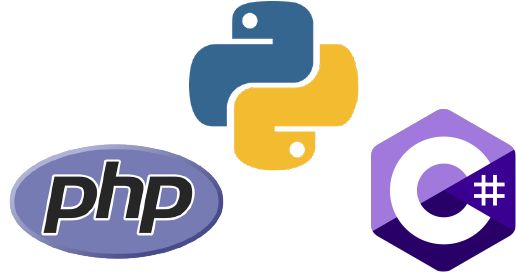

وبسایت چیست؟
تارنما یا سایت به انگلیسی Website مجموعهای از صفحات
وب حاوی محتوای چند رسانه ای است که دارای یک دامنه
اینترنتی یا زیر دامنه اینترنتی مشترکاند و توسط
حداقل یک سرور وب انتشار داده میشود.
صفحهٔ وب سندی است که معمولاً به صورت اچتیامال
نوشته میشود و همواره با استفاده از پیمان
اچتیتیپی میتوان به آن دسترسی پیدا کرد. پیمان
اچتیتیپی اطلاعات را از کارساز وبگاه به مرورگر وب
کاربر منتقل میکند تا این اطلاعات برای کاربر نمایش
داده شوند.
وبگاهها نقشهای مختلفی دارند و به حالتهای گوناگونی
به کار میروند. یک وبگاه ممکن است وبگاه شخصی، یا
وبگاه تجاری یا وبگاه دولتی یا متعلق به یک سازمان
غیرانتفاعی باشد. همهٔ وبگاهها در کنار هم یک تار
جهانگستر بزرگ از اطلاعات را درست میکنند.
یک وبسایت چگونه توسعه دادهمیشود؟
توسعه وب سایت از جمله مواردی است که همیشه مورد توجه
افراد علاقه مند به اینترنت می باشد. در آغاز شما باید
یک طرح مناسب و دقیق برای سایت خود بیابید. اگر شما یک
برنامه نویس تازه کار یا یک طراح هستید و می خواهید
خودتان سایت خود را پیاده سازی نمایید می توانید یک
سایت ساده را با استفاده از آموزش های طراحی سایت html
و نیز با بهره گرفتن از css طراحی کنید. فقط کافی است
اطمینان داشته باشید که می توانید نگاهی حرفه ای به
سایت خود داشته باشید.
هنگام توسعه وب سایت شما می
توانید از یک قالب وب سایت پیش ساخته شده رایگان برای
طراحی وب سایت خود استفاده نمایید یا یک قالب را
متناسب با نیاز خود خریداری نمایید. یک طراح وب سایت
استخدام کرده و از تخصص های فنی و تجربه او برای پیاده
سازی بهتر ایده و پروژه خود استفاده نمایید. در طراحی
وب سایت خود حتما بایستی به نکاتی مثل آسان بودن محیط
کاربری و طراحی یک رابط کاربری مناسب توجه ویژه ای
داشته باشید. یک سبک و طراحی سازگار را در پیش بگیرید،
به گونه ای که هماهنگی موضوعی در آن رعایت گردد و تلاش
کنید از دو یا سه رنگ اصلی و مناسب استفاده نمایید.
وبسایت از چند قسمت تشکیل شدهاست؟
توسعه وب از چندین قسمت تشکیل شده است:
طراحی و توسعه سمت کاربر (FrontEnd Design)
در این قسمت صفحات سایت که کاربر قرار است مشاهده کند طراحی میشود . طراحی وب سایت ها با کد انجام میشود. البته اخیرا سیستم های سایت ساز زیادی به وجود آمده است اما با آن ها نمیتوان طرح های خوبی زد .زبان هایی که در این قسمت استفاده میشود HTML , CSS , js میباشد.زبان HTML
یک زبان نشانه گذاری ابر متنی میباشد . به زبان ساده میتوان از این زبان برای آوردن محتوا به داخل صفحه استفاده کرد و میتوان با نشانه گذاری هر بخش اقدام به مرتب کردن و زیبا نمودن این صفحات کرد.زبان CSS
برای طراحی و مرتب سازی همان بخش هایی که با استفاده از html به داخل صفحه آورده ایم استفاده میشود . به این زبان طراحی یا شیوه نامه آبشاری نیز میگویند . این کلمه از مخفف Cascading Style Sheets گرفته شده است.زبان JavaScript
جاواسکریپت یک زبان سطح بالا میباشد. که به همراه دو زبان بالا هسته اصلی صفحات وب را تشکیل میدهد. از این زبان بیشتر برای داینامیک سازی و پویایی صفحات وب استفاده میکنند .
توسعه سمت سرویس دهنده (BackEnd Development)
قسمت اصلی ماجرا اینجاست. درست است که کاربر طراحی را میبیند و از این قسمت اطلاع چندانی ندارد. اما وقتی کاربری وارد وب سایت ما میشود حتما یک نیازی دارد که میخواهد آن نیاز برآورده شود. ممکن است این نیاز یک خرید باشد یا ممکن است برای مطالعه یک مقاله وارد شده است یا ممکن است میخواهد بلیت سینما بگیرد یا میخواهد هتل رزرو کند و… زبان هایی که برای این بخش استفاده میشود عبارتند از :زبان PHP
یک زبان سمت سرور (سرویس دهنده) و شی گرایی میباشد. نام php از مخفف بازگشتی PHP: Hypertext Preprocessor گرفته شده است.زبان ASP.net
asp.net یک چارچوب کاربردی وب میباشد که مایکروسافت آن را برای برنامه نویسان علاقه مند به توسعه وب عرضه کرده است . برای اینکه در این چارچوب بتوانید کد بزنید میتوانید از زبان c# استفاده کنید. یک زبان سطح بالا میباشد. که به همراه دو زبان بالا هسته اصلی صفحات وب را تشکیل میدهد . از این زبان بیشتر برای پویانمایی استفاده میکنند .زبان Python
یکی از بهترین و قویترین زبان های برنامهنویسی سمت سرور پایتون است. شما با کمک فریمورک جنگو میتوانید یک وبسایت با سرعت بالا و امن بسازید.
چگونه یک وبسایت را توسعه بدهیم؟
سایتینو یک سیستم طراحی وبسایت با روشهای به روز است که مطابق محتوای شما بهترین سایت را طراحی میکند. برای مشاوره رایگان و سفارش طراحی سایت روی دکمه زیر کلیک کنید:
مشاوره رایگان